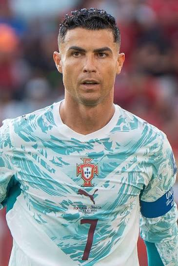

Cristiano Ronaldo 1985. február 5-én született a madeirai Funchalban. Egyszerű családból indult, tizenéves korában a Sportingnál tűnt fel, majd a Manchester United, a Real Madrid, a Juventus és az Al-Nassr játékosa lett. Fizikai erejéről, gólérzékenységéről és példátlan munkamorálról ismert, a portugál válogatott csapatkapitányaként pedig a világ egyik legismertebb sportolójává vált.
Öröksége

Cristiano Ronaldo a portugál válogatott mezében
Ronaldo öröksége nem csak a trófeákban és a rekordokban mérhető. Megmutatta, hogy a tehetséget kitartó munkával és fegyelemmel lehet a csúcsra vinni: a mai napig példaértékű edzésmunkájáról és profi életmódjáról híres. Négy évtizedes pályafutása alatt több generációt inspirált szerte a világon, Madeirát és Portugáliát pedig a futballtérkép élvonalába emelte. Világszerte a közösségi média legkövetett sportolója, a CR7 név pedig már önmagában is márkává vált.